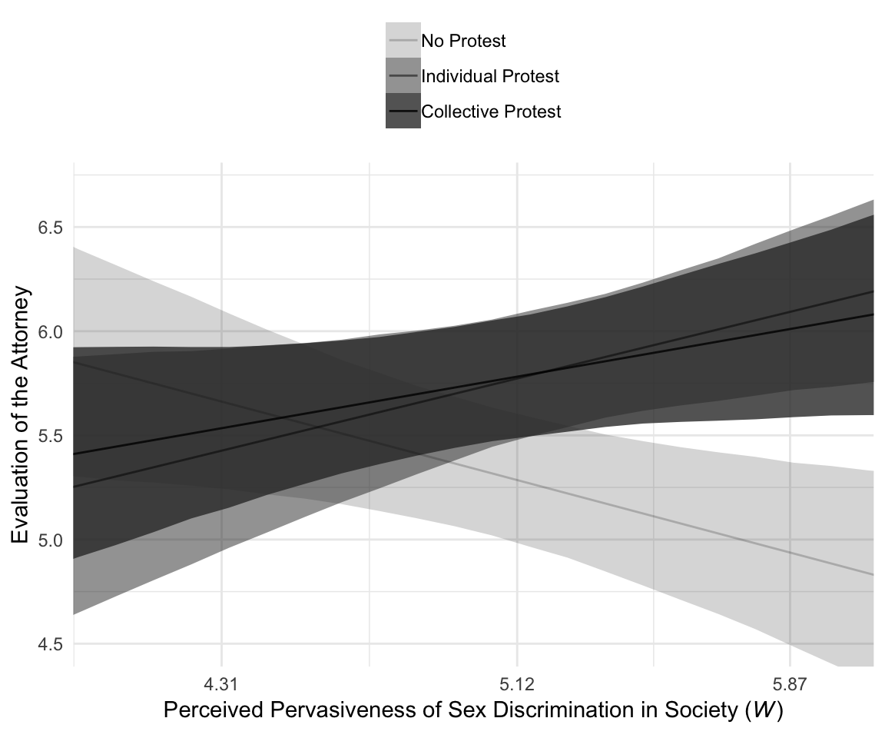
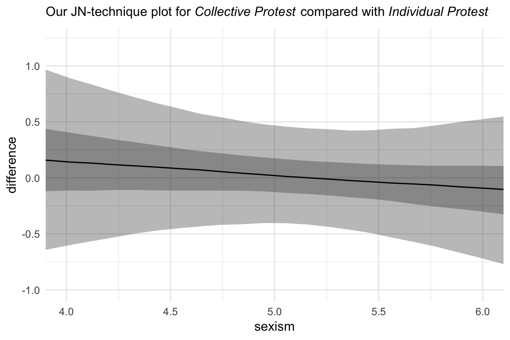

10 Multicategorical Focal Antecedents and Moderators
10.1 Moderation of the effect of a multicategorical antecedent variable
10.2 An example from the sex disrimination in the workplace study
Here we load a couple necessary packages, load the data, and take a glimpse().
library(tidyverse)
protest <- read_csv("data/protest/protest.csv")
glimpse(protest)
#> Observations: 129
#> Variables: 6
#> $ subnum <int> 209, 44, 124, 232, 30, 140, 27, 64, 67, 182, 85, 109, 122, 69, 45, 28, 170, 66...
#> $ protest <int> 2, 0, 2, 2, 2, 1, 2, 0, 0, 0, 2, 2, 0, 1, 1, 0, 1, 2, 2, 1, 2, 1, 1, 2, 2, 0, ...
#> $ sexism <dbl> 4.87, 4.25, 5.00, 5.50, 5.62, 5.75, 5.12, 6.62, 5.75, 4.62, 4.75, 6.12, 4.87, ...
#> $ angry <int> 2, 1, 3, 1, 1, 1, 2, 1, 6, 1, 2, 5, 2, 1, 1, 1, 2, 1, 3, 4, 1, 1, 1, 5, 1, 5, ...
#> $ liking <dbl> 4.83, 4.50, 5.50, 5.66, 6.16, 6.00, 4.66, 6.50, 1.00, 6.83, 5.00, 5.66, 5.83, ...
#> $ respappr <dbl> 4.25, 5.75, 4.75, 7.00, 6.75, 5.50, 5.00, 6.25, 3.00, 5.75, 5.25, 7.00, 4.50, ...With a little ifelse(), computing the dummies D1 and D2 is easy enough.
protest <-
protest %>%
mutate(D1 = ifelse(protest == 1, 1, 0),
D2 = ifelse(protest == 2, 1, 0))Load brms.
library(brms)With model1 and model2 we fit the multicategorical multivariable model and the multicategorical moderation models, respectively.
model1 <-
brm(data = protest, family = gaussian,
liking ~ 1 + D1 + D2 + sexism,
chains = 4, cores = 4)
model2 <-
update(model1,
newdata = protest,
liking ~ 1 + D1 + D2 + sexism + D1:sexism + D2:sexism,
chains = 4, cores = 4)r2s <-
bayes_R2(model1, summary = F) %>%
as_tibble() %>%
rename(`Model 1` = R2) %>%
bind_cols(
bayes_R2(model2, summary = F) %>%
as_tibble() %>%
rename(`Model 2` = R2)
) %>%
mutate(`The R2 difference` = `Model 2` - `Model 1`)
r2s %>%
gather() %>%
# This line isn't necessary, but it sets the order the summaries appear in
mutate(key = factor(key, levels = c("Model 1", "Model 2", "The R2 difference"))) %>%
group_by(key) %>%
summarize(mean = mean(value),
median = median(value),
ll = quantile(value, probs = .025),
ul = quantile(value, probs = .975)) %>%
mutate_if(is.double, round, digits = 3)
#> # A tibble: 3 x 5
#> key mean median ll ul
#> <fct> <dbl> <dbl> <dbl> <dbl>
#> 1 Model 1 0.071 0.067 0.011 0.156
#> 2 Model 2 0.155 0.155 0.066 0.252
#> 3 The R2 difference 0.084 0.085 -0.033 0.201Interestingly, even though our posterior means and medians for the model-specific \(R^2\) values differed some from the OLS estimates in the text, their difference corresponded quite nicely to the one in the text. Let’s take a look at their values.
r2s %>%
gather() %>%
ggplot(aes(x = value)) +
geom_density(size = 0, fill = "grey33") +
scale_y_continuous(NULL, breaks = NULL) +
facet_wrap(~key, scales = "free_y") +
theme_minimal()
The coefficient summaries cohere well with those in Table 10.1.
print(model1, digits = 3)
#> Family: gaussian
#> Links: mu = identity; sigma = identity
#> Formula: liking ~ 1 + D1 + D2 + sexism
#> Data: protest (Number of observations: 129)
#> Samples: 4 chains, each with iter = 2000; warmup = 1000; thin = 1;
#> total post-warmup samples = 4000
#>
#> Population-Level Effects:
#> Estimate Est.Error l-95% CI u-95% CI Eff.Sample Rhat
#> Intercept 4.747 0.640 3.475 5.989 4000 1.000
#> D1 0.498 0.228 0.048 0.932 4000 1.000
#> D2 0.443 0.221 0.023 0.872 4000 1.000
#> sexism 0.111 0.122 -0.127 0.354 4000 1.000
#>
#> Family Specific Parameters:
#> Estimate Est.Error l-95% CI u-95% CI Eff.Sample Rhat
#> sigma 1.044 0.068 0.919 1.184 4000 1.000
#>
#> Samples were drawn using sampling(NUTS). For each parameter, Eff.Sample
#> is a crude measure of effective sample size, and Rhat is the potential
#> scale reduction factor on split chains (at convergence, Rhat = 1).
print(model2, digits = 3)
#> Family: gaussian
#> Links: mu = identity; sigma = identity
#> Formula: liking ~ D1 + D2 + sexism + D1:sexism + D2:sexism
#> Data: protest (Number of observations: 129)
#> Samples: 4 chains, each with iter = 2000; warmup = 1000; thin = 1;
#> total post-warmup samples = 4000
#>
#> Population-Level Effects:
#> Estimate Est.Error l-95% CI u-95% CI Eff.Sample Rhat
#> Intercept 7.660 1.032 5.697 9.701 1584 1.000
#> D1 -4.071 1.465 -6.933 -1.150 1624 1.000
#> D2 -3.439 1.405 -6.239 -0.730 1466 1.000
#> sexism -0.464 0.201 -0.863 -0.077 1565 1.000
#> D1:sexism 0.890 0.280 0.334 1.427 1604 1.000
#> D2:sexism 0.769 0.274 0.238 1.315 1442 1.000
#>
#> Family Specific Parameters:
#> Estimate Est.Error l-95% CI u-95% CI Eff.Sample Rhat
#> sigma 1.005 0.066 0.882 1.143 2748 1.000
#>
#> Samples were drawn using sampling(NUTS). For each parameter, Eff.Sample
#> is a crude measure of effective sample size, and Rhat is the potential
#> scale reduction factor on split chains (at convergence, Rhat = 1).10.3 Visualizing the model
To get our version of the values in Table 10.2, we’ll first recreate columns \(D_{1}\) through \(W\) (SEXISM) and save then as a tibble, nd.
(
nd <-
tibble(D1 = rep(c(0, 1, 0), each = 3),
D2 = rep(c(0, 0, 1), each = 3),
sexism = rep(quantile(protest$sexism, probs = c(.16, .5, .84)),
times = 3))
)
#> # A tibble: 9 x 3
#> D1 D2 sexism
#> <dbl> <dbl> <dbl>
#> 1 0 0 4.31
#> 2 0 0 5.12
#> 3 0 0 5.87
#> 4 1 0 4.31
#> 5 1 0 5.12
#> 6 1 0 5.87
#> # ... with 3 more rowsWith nd in hand, we’ll feed the predictor values into fitted() for the typical posterior summaries.
fitted(model2, newdata = nd) %>% round(digits = 3)
#> Estimate Est.Error Q2.5 Q97.5
#> [1,] 5.66 0.218 5.25 6.10
#> [2,] 5.29 0.155 4.98 5.60
#> [3,] 4.94 0.223 4.49 5.37
#> [4,] 5.43 0.245 4.94 5.92
#> [5,] 5.77 0.155 5.48 6.08
#> [6,] 6.09 0.195 5.72 6.48
#> [7,] 5.53 0.202 5.14 5.92
#> [8,] 5.78 0.151 5.49 6.07
#> [9,] 6.01 0.215 5.59 6.42But is we want to make a decent line plot, we’ll need many more values for sexism, which will appear on the x-axis.
nd <-
tibble(sexism = rep(seq(from = 3.5, to = 6.5, length.out = 30),
times = 9),
D1 = rep(rep(c(0, 1, 0), each = 3),
each = 30),
D2 = rep(rep(c(0, 0, 1), each = 3),
each = 30))This time we’ll save the results from fitted() as a tlbble and wrangle a bit to get ready for Figure 10.3.
model2_fitted <-
fitted(model2, newdata = nd, probs = c(.025, .25, .75, .975)) %>%
as_tibble() %>%
bind_cols(nd) %>%
mutate(condition = rep(c("No Protest", "Individual Protest", "Collective Protest"),
each = 3*30)) %>%
# This line is not necessary, but it will help order the facets of the plot
mutate(condition = factor(condition, levels = c("No Protest", "Individual Protest", "Collective Protest")))
glimpse(model2_fitted)
#> Observations: 270
#> Variables: 10
#> $ Estimate <dbl> 6.04, 5.99, 5.94, 5.89, 5.84, 5.80, 5.75, 5.70, 5.65, 5.60, 5.56, 5.51, 5.46,...
#> $ Est.Error <dbl> 0.352, 0.333, 0.315, 0.297, 0.280, 0.263, 0.246, 0.230, 0.215, 0.202, 0.189, ...
#> $ Q2.5 <dbl> 5.35, 5.34, 5.33, 5.31, 5.30, 5.28, 5.27, 5.26, 5.24, 5.22, 5.20, 5.17, 5.14,...
#> $ Q25 <dbl> 5.80, 5.76, 5.73, 5.69, 5.65, 5.62, 5.58, 5.54, 5.50, 5.46, 5.43, 5.39, 5.35,...
#> $ Q75 <dbl> 6.27, 6.21, 6.15, 6.09, 6.03, 5.97, 5.91, 5.85, 5.80, 5.74, 5.68, 5.63, 5.57,...
#> $ Q97.5 <dbl> 6.72, 6.64, 6.56, 6.48, 6.39, 6.32, 6.24, 6.17, 6.09, 6.01, 5.94, 5.86, 5.80,...
#> $ sexism <dbl> 3.50, 3.60, 3.71, 3.81, 3.91, 4.02, 4.12, 4.22, 4.33, 4.43, 4.53, 4.64, 4.74,...
#> $ D1 <dbl> 0, 0, 0, 0, 0, 0, 0, 0, 0, 0, 0, 0, 0, 0, 0, 0, 0, 0, 0, 0, 0, 0, 0, 0, 0, 0,...
#> $ D2 <dbl> 0, 0, 0, 0, 0, 0, 0, 0, 0, 0, 0, 0, 0, 0, 0, 0, 0, 0, 0, 0, 0, 0, 0, 0, 0, 0,...
#> $ condition <fct> No Protest, No Protest, No Protest, No Protest, No Protest, No Protest, No Pr...For Figure 10.3 and many to follow for this chapter, we’ll superimpose 50% intervals on top of 95% intervals.
# This will help us add the original data points to the plot
protest <-
protest %>%
mutate(condition = ifelse(protest == 0, "No Protest",
ifelse(protest == 1, "Individual Protest",
"Collective Protest"))) %>%
mutate(condition = factor(condition, levels = c("No Protest", "Individual Protest", "Collective Protest")))
# This will help us with the x-axis
breaks <-
tibble(values = quantile(protest$sexism, probs = c(.16, .5, .84))) %>%
mutate(labels = values %>% round(2) %>% as.character())
# Here we plot
model2_fitted %>%
ggplot(aes(x = sexism)) +
geom_ribbon(aes(ymin = Q2.5, ymax = Q97.5),
alpha = 1/3) +
geom_ribbon(aes(ymin = Q25, ymax = Q75),
alpha = 1/3) +
geom_line(aes(y = Estimate)) +
geom_point(data = protest,
aes(y = liking),
size = 2/3) +
scale_x_continuous(breaks = breaks$values,
labels = breaks$labels) +
coord_cartesian(xlim = 4:6,
ylim = c(2.5, 7.2)) +
labs(x = expression(paste("Perceived Pervasiveness of Sex Discrimination in Society (", italic(W), ")")),
y = "Evaluation of the Attorney") +
facet_wrap(~condition) +
theme_minimal()
By adding the data to the plots, they are both more informative and now serve as a posterior predictive check.
10.4 Probing the interaction
10.4.1 The pick-a-point approach.
10.4.1.1 Omnibus inference.
Hayes used the omnibus testing framework to assess how important coefficients \(b_{1}\) and \(b_{2}\) were to our interaction model, model1. Before fitting the models, he discussed why he preferred to fit models after centering sexism (i.e., \(W\)) to 4.25. Here we’ll call our centered variable sexism_p, where _p stands in for “prime”.
protest <-
protest %>%
mutate(sexism_p = sexism - 4.25)From here on, model3 is the moderation model without the lower-order D1 and D2 terms; model4 is the full moderation model.
# The model without D1 + D2
model3 <-
update(model2,
newdata = protest,
liking ~ 1 + sexism_p + D1:sexism_p + D2:sexism_p,
chains = 4, cores = 4)
# The full model with D1 + D2
model4 <-
update(model2,
newdata = protest,
liking ~ 1 + D1 + D2 + sexism_p + D1:sexism_p + D2:sexism_p,
chains = 4, cores = 4)The coefficient summaries for model4 correspond to the top section of Table 10.3 (p. 373).
fixef(model4) %>% round(digits = 3)
#> Estimate Est.Error Q2.5 Q97.5
#> Intercept 5.702 0.233 5.238 6.170
#> D1 -0.307 0.343 -0.988 0.377
#> D2 -0.197 0.311 -0.830 0.407
#> sexism_p -0.478 0.207 -0.887 -0.070
#> D1:sexism_p 0.911 0.291 0.332 1.489
#> D2:sexism_p 0.788 0.275 0.260 1.322We can compare their Bayesian \(R^2\) distributions like we usually do.
r2s <-
bayes_R2(model3, summary = F) %>%
as_tibble() %>%
rename(`Model without D1 + D2` = R2) %>%
bind_cols(
bayes_R2(model4, summary = F) %>%
as_tibble() %>%
rename(`Model with D1 + D2` = R2)
) %>%
mutate(`The R2 difference` = `Model with D1 + D2` - `Model without D1 + D2`)
r2s %>%
gather() %>%
mutate(key = factor(key, levels = c("Model without D1 + D2", "Model with D1 + D2", "The R2 difference"))) %>%
group_by(key) %>%
summarize(median = median(value),
ll = quantile(value, probs = .025),
ul = quantile(value, probs = .975)) %>%
mutate_if(is.double, round, digits = 3)
#> # A tibble: 3 x 4
#> key median ll ul
#> <fct> <dbl> <dbl> <dbl>
#> 1 Model without D1 + D2 0.142 0.052 0.242
#> 2 Model with D1 + D2 0.156 0.065 0.255
#> 3 The R2 difference 0.013 -0.126 0.149Our results differ a bit from those in the text, but the substantive interpretation is the same. The D1 and D2 parameters added little predictive power to the model in terms of \(R^2\). We can also use information criteria to compare the models. Here are the results from using the LOO-CV.
loo(model3, model4,
reloo = T)
#> LOOIC SE
#> model3 371.93 22.15
#> model4 374.69 21.76
#> model3 - model4 -2.76 1.76[When I ran the loo() without the reloo argument, I got a warning message about an observation with an overly-large pareto \(k\) value. Setting reloo = T fixed the problem.]
The LOO-CV difference between the two models was pretty small and its standard error was of about the same magnitude of its difference. Thus, the LOO-CV gives the same general message as the \(R^2\). The D1 and D2 parameters were sufficiently small and uncertain enough that constraining them to zero did little in terms of reducing the explanatory power of the statistical model.
Here’s the same thing all over again, but this time after centering sexism on 5.120.
protest <-
protest %>%
mutate(sexism_p = sexism - 5.120)
# The model without D1 + D2
model3 <-
update(model2,
newdata = protest,
liking ~ 1 + sexism_p + D1:sexism_p + D2:sexism_p,
chains = 4, cores = 4)
# The full model with D1 + D2
model4 <-
update(model2,
newdata = protest,
liking ~ 1 + D1 + D2 + sexism_p + D1:sexism_p + D2:sexism_p,
chains = 4, cores = 4)These coefficient summaries correspond to the middle section of Table 10.3 (p. 373).
fixef(model4) %>% round(digits = 3)
#> Estimate Est.Error Q2.5 Q97.5
#> Intercept 5.288 0.160 4.975 5.598
#> D1 0.481 0.222 0.042 0.909
#> D2 0.488 0.219 0.054 0.910
#> sexism_p -0.475 0.215 -0.897 -0.057
#> D1:sexism_p 0.906 0.299 0.320 1.488
#> D2:sexism_p 0.780 0.284 0.219 1.352Here are the Bayesian \(R^2\) summaries and the summary for their difference.
r2s <-
bayes_R2(model3, summary = F) %>%
as_tibble() %>%
rename(`Model without D1 + D2` = R2) %>%
bind_cols(
bayes_R2(model4, summary = F) %>%
as_tibble() %>%
rename(`Model with D1 + D2` = R2)
) %>%
mutate(`The R2 difference` = `Model with D1 + D2` - `Model without D1 + D2`)
r2s %>%
gather() %>%
mutate(key = factor(key, levels = c("Model without D1 + D2", "Model with D1 + D2", "The R2 difference"))) %>%
group_by(key) %>%
summarize(median = median(value),
ll = quantile(value, probs = .025),
ul = quantile(value, probs = .975)) %>%
mutate_if(is.double, round, digits = 3)
#> # A tibble: 3 x 4
#> key median ll ul
#> <fct> <dbl> <dbl> <dbl>
#> 1 Model without D1 + D2 0.099 0.026 0.196
#> 2 Model with D1 + D2 0.155 0.065 0.258
#> 3 The R2 difference 0.054 -0.075 0.182loo(model3, model4)
#> LOOIC SE
#> model3 377.35 23.74
#> model4 375.16 21.77
#> model3 - model4 2.19 6.04Here again our Bayesian \(R^2\) and loo() results cohere, both suggesting the D1 and D2 parameters were of little predictive utility. Note how this differs a little from the second \(F\)-test on page 370.
Here’s what happens when we center sexism on 5.896.
protest <-
protest %>%
mutate(sexism_p = sexism - 5.896)
# The model without D1 + D2
model3 <-
update(model2,
newdata = protest,
liking ~ 1 + sexism_p + D1:sexism_p + D2:sexism_p,
chains = 4, cores = 4)
# The full model with D1 + D2
model4 <-
update(model2,
newdata = protest,
liking ~ 1 + D1 + D2 + sexism_p + D1:sexism_p + D2:sexism_p,
chains = 4, cores = 4)These coefficient summaries correspond to the lower section of Table 10.3 (p. 373).
fixef(model4) %>% round(digits = 3)
#> Estimate Est.Error Q2.5 Q97.5
#> Intercept 4.921 0.230 4.460 5.361
#> D1 1.180 0.307 0.585 1.795
#> D2 1.096 0.315 0.505 1.721
#> sexism_p -0.470 0.204 -0.862 -0.077
#> D1:sexism_p 0.900 0.286 0.340 1.462
#> D2:sexism_p 0.775 0.272 0.261 1.321Again, the \(R^2\) distributions and their difference-score distribution.
r2s <-
bayes_R2(model3, summary = F) %>%
as_tibble() %>%
rename(`Model without D1 + D2` = R2) %>%
bind_cols(
bayes_R2(model4, summary = F) %>%
as_tibble() %>%
rename(`Model with D1 + D2` = R2)
) %>%
mutate(`The R2 difference` = `Model with D1 + D2` - `Model without D1 + D2`)
r2s %>%
gather() %>%
mutate(key = factor(key, levels = c("Model without D1 + D2", "Model with D1 + D2", "The R2 difference"))) %>%
group_by(key) %>%
summarize(median = median(value),
ll = quantile(value, probs = .025),
ul = quantile(value, probs = .975)) %>%
mutate_if(is.double, round, digits = 3)
#> # A tibble: 3 x 4
#> key median ll ul
#> <fct> <dbl> <dbl> <dbl>
#> 1 Model without D1 + D2 0.027 0.003 0.089
#> 2 Model with D1 + D2 0.154 0.063 0.256
#> 3 The R2 difference 0.124 0.022 0.232loo(model3, model4)
#> LOOIC SE
#> model3 387.2 26.7
#> model4 374.6 21.9
#> model3 - model4 12.7 11.1Although our Bayesian \(R^2\) difference is now predominantly positive, the LOO-CV difference for the two models remains uncertain. Here’s a look at the two parameters in question using a handmade coefficient plot.
posterior_samples(model4) %>%
select(b_D1:b_D2) %>%
gather() %>%
mutate(key = str_remove(key, "b_")) %>%
ggplot(aes(key, y = value)) +
stat_summary(fun.y = median,
fun.ymin = function(i){quantile(i, probs = .025)},
fun.ymax = function(i){quantile(i, probs = .975)},
color = "grey33") +
stat_summary(geom = "linerange",
fun.ymin = function(i){quantile(i, probs = .25)},
fun.ymax = function(i){quantile(i, probs = .75)},
color = "grey33",
size = 1.25) +
xlab(NULL) +
coord_flip(ylim = 0:2) +
theme_minimal()
For Figure 10.4, we’ll drop our faceting approach and just make one big plot. Heads up: I’m going to drop the 50% intervals from this plot. They’d just make it too busy.
model2_fitted %>%
ggplot(aes(x = sexism, alpha = condition)) +
geom_ribbon(aes(ymin = Q2.5, ymax = Q97.5),
size = 0) +
geom_line(aes(y = Estimate)) +
scale_alpha_manual(values = c(.2, .5, .8)) +
scale_x_continuous(breaks = breaks$values,
labels = breaks$labels) +
coord_cartesian(xlim = 4:6,
ylim = c(4.5, 6.7)) +
labs(x = expression(paste("Perceived Pervasiveness of Sex Discrimination in Society (", italic(W), ")")),
y = "Evaluation of the Attorney") +
theme_minimal() +
theme(legend.title = element_blank(),
legend.position = "top",
legend.direction = "vertical")
10.4.1.2 Pairwise inference.
To “consider the effect of Catherine’s behavior on how she is perceived among people who are relatively high in their perceptions of the pervasiveness of sex discrimination in society (p. 372)”, we’ll use fitted(). Since the number of unique predictor values is small for this example, we’ll just plug them directly into the newdata argument rather than first saving them as a nd object.
fitted(model2,
newdata = tibble(D1 = c(0, 1, 0),
D2 = c(0, 0, 1),
sexism = 5.896)) %>%
round(digits = 3)
#> Estimate Est.Error Q2.5 Q97.5
#> [1,] 4.92 0.227 4.47 5.36
#> [2,] 6.10 0.199 5.72 6.50
#> [3,] 6.02 0.219 5.59 6.44Note that for these analyses, we just used model2, the model based on the un-centered sexism variable. We can also continue using fitted() in conjunction with the original model2 to get the group comparisons for when \(W\) = 4.250. Since these involve computing difference scores, we’ll have to use summary = F and do some wrangling.
fitted(model2,
newdata = tibble(D1 = c(0, 1, 0),
D2 = c(0, 0, 1),
sexism = 4.25),
summary = F) %>%
as_tibble() %>%
rename(`No Protest` = V1,
`Individual Protest` = V2,
`Collective Protest` = V3) %>%
mutate(difference_a = `Individual Protest` - `No Protest`,
difference_b = `Collective Protest` - `No Protest`) %>%
gather() %>%
mutate(key = factor(key, levels = c("No Protest", "Individual Protest", "Collective Protest",
"difference_a", "difference_b"))) %>%
group_by(key) %>%
summarize(mean = mean(value),
sd = sd(value),
ll = quantile(value, probs = .025),
ul = quantile(value, probs = .975)) %>%
mutate_if(is.double, round, digits = 3)
#> # A tibble: 5 x 5
#> key mean sd ll ul
#> <fct> <dbl> <dbl> <dbl> <dbl>
#> 1 No Protest 5.69 0.227 5.26 6.15
#> 2 Individual Protest 5.40 0.254 4.9 5.91
#> 3 Collective Protest 5.52 0.21 5.12 5.92
#> 4 difference_a -0.287 0.341 -0.962 0.392
#> 5 difference_b -0.172 0.312 -0.802 0.434Here’s the same thing for when \(W\) = 5.120.
fitted(model2,
newdata = tibble(D1 = c(0, 1, 0),
D2 = c(0, 0, 1),
sexism = 5.120),
summary = F) %>%
as_tibble() %>%
rename(`No Protest` = V1,
`Individual Protest` = V2,
`Collective Protest` = V3) %>%
mutate(difference_a = `Individual Protest` - `No Protest`,
difference_b = `Collective Protest` - `No Protest`) %>%
gather() %>%
mutate(key = factor(key, levels = c("No Protest", "Individual Protest", "Collective Protest",
"difference_a", "difference_b"))) %>%
group_by(key) %>%
summarize(mean = mean(value),
sd = sd(value),
ll = quantile(value, probs = .025),
ul = quantile(value, probs = .975)) %>%
mutate_if(is.double, round, digits = 3)
#> # A tibble: 5 x 5
#> key mean sd ll ul
#> <fct> <dbl> <dbl> <dbl> <dbl>
#> 1 No Protest 5.28 0.155 4.98 5.60
#> 2 Individual Protest 5.77 0.155 5.48 6.08
#> 3 Collective Protest 5.78 0.151 5.49 6.07
#> 4 difference_a 0.488 0.221 0.044 0.907
#> 5 difference_b 0.497 0.22 0.053 0.915Finally, here it is for when \(W\) = 5.986.
fitted(model2,
newdata = tibble(D1 = c(0, 1, 0),
D2 = c(0, 0, 1),
sexism = 5.986),
summary = F) %>%
as_tibble() %>%
rename(`No Protest` = V1,
`Individual Protest` = V2,
`Collective Protest` = V3) %>%
mutate(difference_a = `Individual Protest` - `No Protest`,
difference_b = `Collective Protest` - `No Protest`) %>%
gather() %>%
mutate(key = factor(key, levels = c("No Protest", "Individual Protest", "Collective Protest",
"difference_a", "difference_b"))) %>%
group_by(key) %>%
summarize(mean = mean(value),
sd = sd(value),
ll = quantile(value, probs = .025),
ul = quantile(value, probs = .975)) %>%
mutate_if(is.double, round, digits = 3)
#> # A tibble: 5 x 5
#> key mean sd ll ul
#> <fct> <dbl> <dbl> <dbl> <dbl>
#> 1 No Protest 4.88 0.24 4.40 5.35
#> 2 Individual Protest 6.14 0.211 5.73 6.56
#> 3 Collective Protest 6.05 0.231 5.60 6.49
#> 4 difference_a 1.26 0.315 0.639 1.87
#> 5 difference_b 1.16 0.335 0.497 1.8210.4.2 The Johnson-Neyman technique.
10.4.2.1 Omnibus inference.
Consider the first sentence of the section:
Applied to probing an interaction between a multicategorical \(X\) and a continuous \(W\), an omnibus version of the JM technique involves finding the value or values of \(W\) where their \(F\)-ratio comparing the \(g\) estimated values of \(Y\) is just statistically significant.
Since we’re not using \(F\)-tests with our approach to Bayesian modeling, the closest we might have is a series of \(R^2\) difference tests, which would require refitting the model multiple times over many ways of centering the \(W\)-variable, sexism. I suppose you could do this if you wanted, but it just seems silly, to me. I’ll leave this one up to the interested reader.
10.4.2.2 Pairwise inference.
Hayes didn’t make plots for this section, but if you’re careful constructing your nd and with the subsequent wrangling, you can make the usual plots. Since we have two conditions we’d like to compare with No Protest, we’ll make two plots. Here’s the comparison using Individual Protest, first.
# the transition value Hayes identified in the text
Hayes_value <- 5.065
nd <-
tibble(D1 = rep(0:1, each = 30),
D2 = rep(0, times = 30*2),
sexism = rep(seq(from = 3.5, to = 6.5, length.out = 30),
times = 2))
# we need some new data
fitted(model2,
newdata = nd,
summary = F) %>%
as_tibble() %>%
gather() %>%
mutate(sexism = rep(rep(seq(from = 3.5, to = 6.5, length.out = 30),
each = 4000),
times = 2)) %>%
mutate(condition = rep(c("No Protest", "Individual Protest"),
each = 4000*30)) %>%
mutate(iter = rep(1:4000, times = 30*2)) %>%
select(-key) %>%
rename(estimate = value) %>%
spread(key = condition, value = estimate) %>%
mutate(difference = `Individual Protest` - `No Protest`) %>%
# the plot
ggplot(aes(x = sexism, y = difference)) +
stat_summary(geom = "ribbon",
fun.ymin = function(i){quantile(i, probs = .025)},
fun.ymax = function(i){quantile(i, probs = .975)},
alpha = 1/3) +
stat_summary(geom = "ribbon",
fun.ymin = function(i){quantile(i, probs = .25)},
fun.ymax = function(i){quantile(i, probs = .75)},
alpha = 1/3) +
stat_summary(geom = "line",
fun.y = median) +
scale_x_continuous(breaks = c(4, Hayes_value, 6),
labels = c("4", Hayes_value, "6")) +
coord_cartesian(xlim = 4:6) +
labs(subtitle = expression(paste("Our JN-technique plot for ", italic("Individual Protest"), " compared with ", italic("No Protest")))) +
theme_minimal()
Now we’re ready to compare No Protest to Collective Protest. The main difference is with the rep() code in the D1 and D2 columns in nd. Other than that, we just switched out a few “Individual” labels with “Collective”.
# the transition value Hayes identified in the text
Hayes_value <- 5.036
nd <-
tibble(D1 = rep(0, times = 30*2),
D2 = rep(0:1, each = 30),
sexism = rep(seq(from = 3.5, to = 6.5, length.out = 30),
times = 2))
fitted(model2,
newdata = nd,
summary = F) %>%
as_tibble() %>%
gather() %>%
mutate(sexism = rep(rep(seq(from = 3.5, to = 6.5, length.out = 30),
each = 4000),
times = 2)) %>%
mutate(condition = rep(c("No Protest", "Collective Protest"),
each = 4000*30)) %>%
mutate(iter = rep(1:4000, times = 30*2)) %>%
select(-key) %>%
rename(estimate = value) %>%
spread(key = condition, value = estimate) %>%
mutate(difference = `Collective Protest` - `No Protest`) %>%
ggplot(aes(x = sexism, y = difference)) +
stat_summary(geom = "ribbon",
fun.ymin = function(i){quantile(i, probs = .025)},
fun.ymax = function(i){quantile(i, probs = .975)},
alpha = 1/3) +
stat_summary(geom = "ribbon",
fun.ymin = function(i){quantile(i, probs = .25)},
fun.ymax = function(i){quantile(i, probs = .75)},
alpha = 1/3) +
stat_summary(geom = "line",
fun.y = median) +
scale_x_continuous(breaks = c(4, Hayes_value, 6),
labels = c("4", Hayes_value, "6")) +
coord_cartesian(xlim = 4:6) +
labs(subtitle = expression(paste("Our JN-technique plot for ", italic("Collective Protest"), " compared with ", italic("No Protest")))) +
theme_minimal()
And here we do it one last time between the two active protest conditions.
nd <-
tibble(D1 = rep(1:0, each = 30),
D2 = rep(0:1, each = 30),
sexism = rep(seq(from = 3.5, to = 6.5, length.out = 30),
times = 2))
fitted(model2,
newdata = nd,
summary = F) %>%
as_tibble() %>%
gather() %>%
mutate(sexism = rep(rep(seq(from = 3.5, to = 6.5, length.out = 30),
each = 4000),
times = 2)) %>%
mutate(condition = rep(c("Individual Protest", "Collective Protest"),
each = 4000*30)) %>%
mutate(iter = rep(1:4000, times = 30*2)) %>%
select(-key) %>%
rename(estimate = value) %>%
spread(key = condition, value = estimate) %>%
mutate(difference = `Collective Protest` - `Individual Protest`) %>%
ggplot(aes(x = sexism, y = difference)) +
stat_summary(geom = "ribbon",
fun.ymin = function(i){quantile(i, probs = .025)},
fun.ymax = function(i){quantile(i, probs = .975)},
alpha = 1/3) +
stat_summary(geom = "ribbon",
fun.ymin = function(i){quantile(i, probs = .25)},
fun.ymax = function(i){quantile(i, probs = .75)},
alpha = 1/3) +
stat_summary(geom = "line",
fun.y = median) +
coord_cartesian(xlim = 4:6) +
labs(subtitle = expression(paste("Our JN-technique plot for ", italic("Collective Protest"), " compared with ", italic("Individual Protest")))) +
theme_minimal()
Not much difference there.
10.5 When the moderator is multicategorical
10.5.1 An example.
Just as a refresher, here’s the print() output for model2.
print(model2, digits = 3)
#> Family: gaussian
#> Links: mu = identity; sigma = identity
#> Formula: liking ~ D1 + D2 + sexism + D1:sexism + D2:sexism
#> Data: protest (Number of observations: 129)
#> Samples: 4 chains, each with iter = 2000; warmup = 1000; thin = 1;
#> total post-warmup samples = 4000
#>
#> Population-Level Effects:
#> Estimate Est.Error l-95% CI u-95% CI Eff.Sample Rhat
#> Intercept 7.660 1.032 5.697 9.701 1584 1.000
#> D1 -4.071 1.465 -6.933 -1.150 1624 1.000
#> D2 -3.439 1.405 -6.239 -0.730 1466 1.000
#> sexism -0.464 0.201 -0.863 -0.077 1565 1.000
#> D1:sexism 0.890 0.280 0.334 1.427 1604 1.000
#> D2:sexism 0.769 0.274 0.238 1.315 1442 1.000
#>
#> Family Specific Parameters:
#> Estimate Est.Error l-95% CI u-95% CI Eff.Sample Rhat
#> sigma 1.005 0.066 0.882 1.143 2748 1.000
#>
#> Samples were drawn using sampling(NUTS). For each parameter, Eff.Sample
#> is a crude measure of effective sample size, and Rhat is the potential
#> scale reduction factor on split chains (at convergence, Rhat = 1).The Bayesian \(R^2\):
bayes_R2(model2) %>% round(digits = 3)
#> Estimate Est.Error Q2.5 Q97.5
#> R2 0.155 0.048 0.066 0.252And the \(R^2\) difference between this and the model excluding the interaction terms:
bayes_R2(model1, summary = F) %>%
as_tibble() %>%
rename(`Model 1` = R2) %>%
bind_cols(
bayes_R2(model2, summary = F) %>%
as_tibble() %>%
rename(`Model 2` = R2)
) %>%
transmute(difference = `Model 2` - `Model 1`) %>%
summarize(mean = mean(difference),
ll = quantile(difference, probs = .025),
ul = quantile(difference, probs = .975)) %>%
mutate_if(is.double, round, digits = 3)
#> # A tibble: 1 x 3
#> mean ll ul
#> <dbl> <dbl> <dbl>
#> 1 0.084 -0.033 0.201Much like in the text, our Figure 10.7 is just a little different from what we did with Figure 10.3.
# This will help us with the `geom_text()` annotation
slopes <-
tibble(slope = c(fixef(model2)["sexism", "Estimate"] + fixef(model2)["D1:sexism", "Estimate"],
fixef(model2)["sexism", "Estimate"] + fixef(model2)["D2:sexism", "Estimate"],
fixef(model2)["sexism", "Estimate"]),
x = c(4.8, 4.6, 5),
y = c(6.37, 6.25, 4.5),
condition = c("Individual Protest", "Collective Protest", "No Protest")) %>%
mutate(label = str_c("This slope is about ", slope %>% round(digits = 3)),
condition = factor(condition, levels = c("No Protest", "Individual Protest", "Collective Protest")))
# Here we plot
model2_fitted %>%
ggplot(aes(x = sexism)) +
geom_ribbon(aes(ymin = Q2.5, ymax = Q97.5),
alpha = 1/3) +
geom_ribbon(aes(ymin = Q25, ymax = Q75),
alpha = 1/3) +
geom_line(aes(y = Estimate)) +
geom_text(data = slopes,
aes(x = x,
y = y,
label = label)) +
coord_cartesian(xlim = 4:6) +
labs(x = expression(paste("Perceived Pervasiveness of Sex Discrimination in Society (", italic(X), ")")),
y = "Evaluation of the Attorney") +
facet_wrap(~condition) +
theme_minimal()
10.5.2 Probing the interaction and interpreting the regression coefficients.
We computed the posterior means for the slopes when prepping for the figure, above. Here’s how we might get more complete posterior summaries. Much like in the text, our Figure 10.7 is just a little different from what we did with Figure 10.3.
post <-
posterior_samples(model2) %>%
transmute(`No Protest` = b_sexism + `b_D1:sexism`*0 + `b_D2:sexism`*0,
`Individual Protest` = b_sexism + `b_D1:sexism`*1 + `b_D2:sexism`*0,
`Collective Protest` = b_sexism + `b_D1:sexism`*0 + `b_D2:sexism`*1)
post %>%
gather() %>%
mutate(key = factor(key, levels = c("No Protest", "Individual Protest", "Collective Protest"))) %>%
group_by(key) %>%
summarise(mean = mean(value),
sd = sd(value),
ll = quantile(value, probs = .025),
ul = quantile(value, probs = .975)) %>%
mutate_if(is.double, round, digits = 3)
#> # A tibble: 3 x 5
#> key mean sd ll ul
#> <fct> <dbl> <dbl> <dbl> <dbl>
#> 1 No Protest -0.464 0.201 -0.863 -0.077
#> 2 Individual Protest 0.427 0.201 0.036 0.821
#> 3 Collective Protest 0.305 0.185 -0.07 0.67Here are the differences among the three protest groups.
post %>%
transmute(`Individual Protest - No Protest` = `Individual Protest` - `No Protest`,
`Collective Protest - No Protest` = `Collective Protest` - `No Protest`,
`Individual Protest - Collective Protest` = `Individual Protest` - `Collective Protest`) %>%
gather() %>%
# again, not necessary, but useful for reordering the summaries
mutate(key = factor(key, levels = c("Individual Protest - No Protest", "Collective Protest - No Protest", "Individual Protest - Collective Protest"))) %>%
group_by(key) %>%
summarise(mean = mean(value),
sd = sd(value),
ll = quantile(value, probs = .025),
ul = quantile(value, probs = .975)) %>%
mutate_if(is.double, round, digits = 3)
#> # A tibble: 3 x 5
#> key mean sd ll ul
#> <fct> <dbl> <dbl> <dbl> <dbl>
#> 1 Individual Protest - No Protest 0.89 0.28 0.334 1.43
#> 2 Collective Protest - No Protest 0.769 0.274 0.238 1.32
#> 3 Individual Protest - Collective Protest 0.122 0.274 -0.4 0.667Session info
sessionInfo()
#> R version 3.5.1 (2018-07-02)
#> Platform: x86_64-apple-darwin15.6.0 (64-bit)
#> Running under: macOS High Sierra 10.13.4
#>
#> Matrix products: default
#> BLAS: /Library/Frameworks/R.framework/Versions/3.5/Resources/lib/libRblas.0.dylib
#> LAPACK: /Library/Frameworks/R.framework/Versions/3.5/Resources/lib/libRlapack.dylib
#>
#> locale:
#> [1] en_US.UTF-8/en_US.UTF-8/en_US.UTF-8/C/en_US.UTF-8/en_US.UTF-8
#>
#> attached base packages:
#> [1] stats graphics grDevices utils datasets methods base
#>
#> other attached packages:
#> [1] brms_2.3.4 Rcpp_0.12.17 bindrcpp_0.2.2 forcats_0.3.0 stringr_1.3.1 dplyr_0.7.6
#> [7] purrr_0.2.5 readr_1.1.1 tidyr_0.8.1 tibble_1.4.2 ggplot2_3.0.0 tidyverse_1.2.1
#>
#> loaded via a namespace (and not attached):
#> [1] nlme_3.1-137 matrixStats_0.53.1 xts_0.10-2 lubridate_1.7.4
#> [5] threejs_0.3.1 httr_1.3.1 rprojroot_1.3-2 rstan_2.17.3
#> [9] tools_3.5.1 backports_1.1.2 utf8_1.1.4 R6_2.2.2
#> [13] DT_0.4 lazyeval_0.2.1 colorspace_1.3-2 withr_2.1.2
#> [17] tidyselect_0.2.4 gridExtra_2.3 mnormt_1.5-5 Brobdingnag_1.2-5
#> [21] compiler_3.5.1 cli_1.0.0 rvest_0.3.2 shinyjs_1.0
#> [25] xml2_1.2.0 labeling_0.3 colourpicker_1.0 bookdown_0.7
#> [29] scales_0.5.0 dygraphs_1.1.1.5 mvtnorm_1.0-8 psych_1.8.4
#> [33] ggridges_0.5.0 digest_0.6.15 StanHeaders_2.17.2 foreign_0.8-70
#> [37] rmarkdown_1.10 base64enc_0.1-3 pkgconfig_2.0.1 htmltools_0.3.6
#> [41] htmlwidgets_1.2 rlang_0.2.1 readxl_1.1.0 rstudioapi_0.7
#> [45] shiny_1.1.0 bindr_0.1.1 zoo_1.8-2 jsonlite_1.5
#> [49] gtools_3.8.1 crosstalk_1.0.0 inline_0.3.15 magrittr_1.5
#> [53] loo_2.0.0 bayesplot_1.5.0 Matrix_1.2-14 munsell_0.5.0
#> [57] abind_1.4-5 stringi_1.2.3 yaml_2.1.19 plyr_1.8.4
#> [61] grid_3.5.1 parallel_3.5.1 promises_1.0.1 crayon_1.3.4
#> [65] miniUI_0.1.1.1 lattice_0.20-35 haven_1.1.2 hms_0.4.2
#> [69] knitr_1.20 pillar_1.2.3 igraph_1.2.1 markdown_0.8
#> [73] shinystan_2.5.0 codetools_0.2-15 reshape2_1.4.3 stats4_3.5.1
#> [77] rstantools_1.5.0 glue_1.2.0 evaluate_0.10.1 modelr_0.1.2
#> [81] httpuv_1.4.4.2 cellranger_1.1.0 gtable_0.2.0 assertthat_0.2.0
#> [85] xfun_0.3 mime_0.5 xtable_1.8-2 broom_0.4.5
#> [89] coda_0.19-1 later_0.7.3 rsconnect_0.8.8 shinythemes_1.1.1
#> [93] bridgesampling_0.4-0